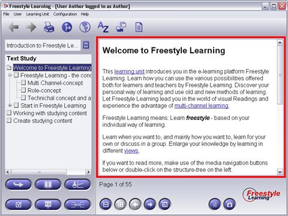

The large area on the right part of the screen is used to display any content related to the Learning Unit View Element selected from the Structure Panel. How the learning content is displayed depends on the View Manager supporting the active View. To interact with the presented content, use the buttons from the Interaction Panel below.

Back to Main Help Page